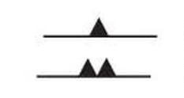
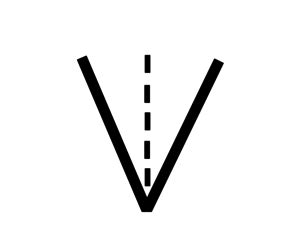
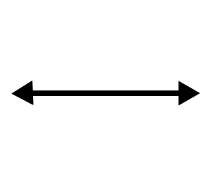
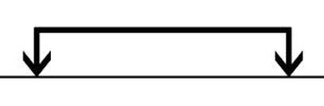

Pattern Symbols
When making a piece of garment, a pattern is normally used to cut the pieces
of fabric before assembling them. Patterns normally have a wide range of symbols
to guide you on how to cut and align the pieces together.
| Symbol |
Name |
Description |
|  |
Notches |
- Snap fabric where notch is
- Normally found at the edges
- Used to match pattern pieces
|
|  |
Darts |
- Mark onto frabric. Fold along dashed line and sew on the solid line
- Normally found at the bust or waist
- Used to add shape onto garment
|
|  |
Grainline |
- Match direction of fabric with the arrow
- Found in every piece
- Helps with draping and matching fabric patterns
|
|  |
Cuts on fold |
- Fold fabric and cut
- Normally found at the waistband or collars
- Used to get a piece twice as long and symmetrical
|